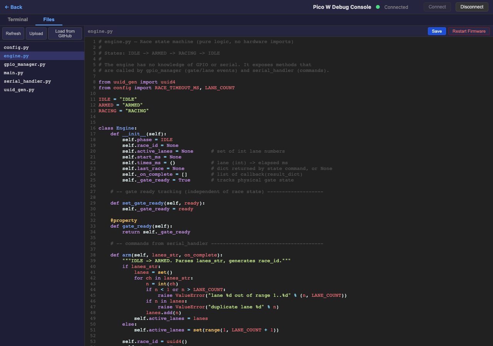
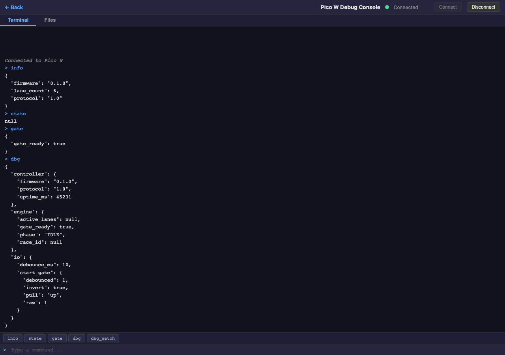
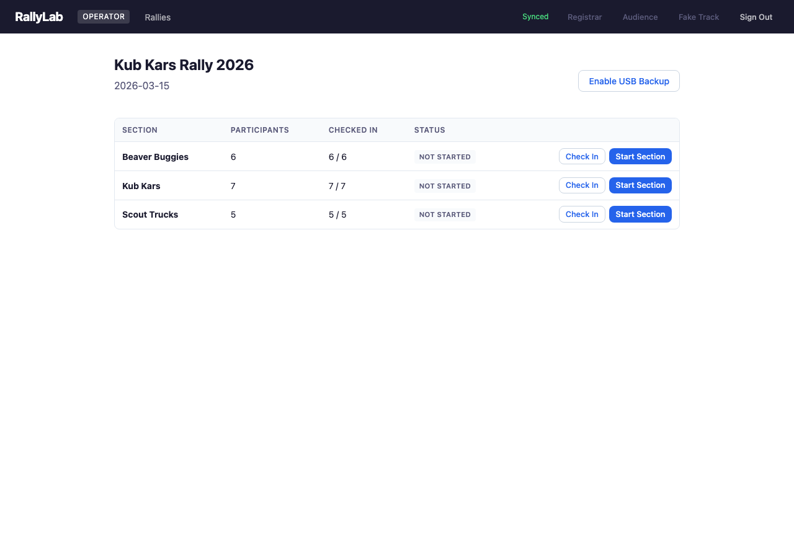
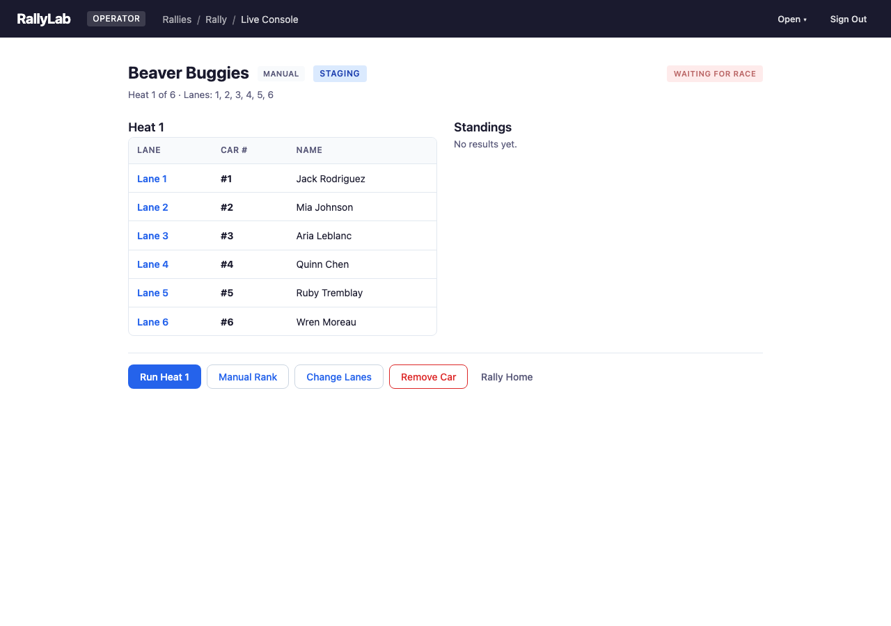
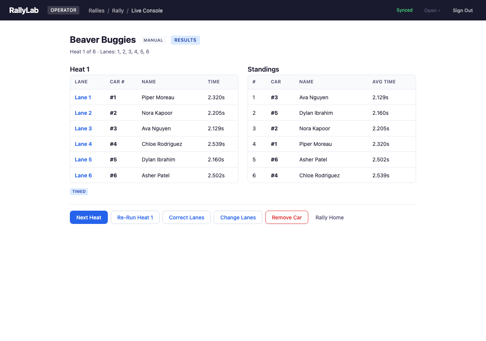

Getting Started
Set up a Raspberry Pi Pico W as your track controller, wire it to your pinewood derby track, and run your first hardware-timed race. If you just want to try RallyLab without hardware, see the Evaluation Guide instead.
Full feature reference → User GuideWhat You'll Need
Hardware
- Raspberry Pi Pico W (recommended) or plain Pico — the W adds WiFi; a plain Pico works fine over USB serial
- Micro-USB cable — for power, firmware upload, and serial communication
- Pinewood derby track with lane finish sensors and a start gate switch
- Wiring to connect the track's sensors to the Pico's GPIO header pins (jumper wires, breakout board, or whatever suits your connector)
Software
- Chrome or Edge (desktop) — required for both RallyLab and the Pico Debug Console (Web Serial API)
- MicroPython firmware — the Pico W runs MicroPython; you'll install it once
config.py — each button simulates a lane finish or gate release.
Install MicroPython on the Pico W
If your Pico W already has MicroPython installed, skip to step 3.
- Download the latest MicroPython UF2 for the Pico W from micropython.org.
- Hold the BOOTSEL button on the Pico W, then plug in the USB cable. A drive named RPI-RP2 appears on your computer.
- Drag the
.uf2file onto the RPI-RP2 drive. The Pico reboots automatically and the drive disappears — MicroPython is now installed.
/dev/cu.usbmodem* on Mac, COM3 on Windows). You'll use this port in the next step.
Upload the RallyLab Firmware
The firmware lives in the firmware/ directory of the RallyLab repository. You can upload it using the Pico Debug Console in your browser, or with a command-line tool like mpremote.
Option A: Pico Debug Console (browser)
- From the Operator Console, click the "Open" menu and select "Pico Debug Console".
- Click Connect and select your Pico from the serial port picker.
- Switch to the Files tab.
- Click "Load from GitHub" — this downloads all firmware files from the repository and writes them to the Pico automatically. Alternatively, click "Upload" and select the
.pyfiles from thefirmware/directory yourself (multi-select is supported). - Click Restart Firmware to soft-reset the Pico.

Option B: mpremote (command line)
Install mpremote with pip, then copy all firmware files to the Pico:
pip install mpremote
mpremote cp firmware/*.py :Reset the Pico to start the new firmware:
mpremote resetmpremote, and vice versa.
Wire the Track
Most pinewood derby tracks have lane finish sensors (normally-open switches that close when a car arrives) and a start gate switch (often a magnetic reed switch that opens when the gate releases). Each sensor wire connects to a GPIO pin on the Pico; the Pico uses internal pull-ups, so a sensor triggering pulls the pin LOW.
The wiring depends on your specific track. Here's what you need to figure out:
- How many lanes does your track have, and which wire goes to which lane?
- What kind of start gate switch does it use? A reed switch opens on release (rising edge = race start). A microswitch may work the opposite way.
- Is there a common ground? Most tracks share a ground wire across all sensors — connect it to the Pico's GND pin.
Use a multimeter in continuity mode to map each sensor to its wire. Trip each lane sensor one at a time and note which wire shows continuity to ground.
Update config.py
Open config.py on the Pico (via the Debug Console's Files tab or mpremote) and set the pin mapping to match your wiring. The file ships with presets you can use as starting points:
- Breadboard (default) — pushbuttons on GP5–GP13, for development without a track
- SuperTimer (dedicated gate) — for tracks with a DA-15 connector where the start gate has its own pin
- SuperTimer (shared pin) — for DA-15 tracks where Lane 2 and the start gate share a wire
The key settings are LANE_PINS (a dict mapping lane number to GPIO number), GATE_PIN, and GATE_INVERT (set True for breadboard buttons, False for a real reed switch). Edit these to match your track and save.
After editing, click Restart Firmware (or run mpremote reset).
Verify with the Debug Console
Before running a race, verify that every sensor and the start gate are working correctly.
- Open the Pico Debug Console from the Operator Console's "Open" menu and connect to the Pico W.
- In the Terminal tab, type
infoand press Enter. You should see the firmware version, protocol version, and lane count. - Type
dbgto see a snapshot of all sensor states, WiFi status, and the engine state machine phase. - Type
dbg_watchto start a live edge monitor. Now trip each lane sensor and the start gate one at a time — you should see a JSON line for each event confirming the correct pin label. - Type anything (e.g.,
state) to stop the watch and return to normal command mode.

dbg_watch and trip Lane 3's sensor, you should see { "pin": "lane", "lane": 3, "edge": "triggered" }. If you see the wrong lane number or no output, check your wiring and config.py pin mapping.
Connect from the Operator Console
With the firmware verified, you're ready to connect the Operator Console to the track controller.
- Open the Operator Console (
operator.html) and load your rally (or load demo data to test). - Click the Connect button in the top toolbar.
- Select the Serial (USB) connection type and pick the Pico W's serial port.
- The status indicator turns green when connected. The operator console now receives finish times automatically as races complete.

WiFi connection (optional)
For a wireless setup, configure WiFi credentials on the Pico first. In the Debug Console terminal:
wifi_setup MyNetworkName MyPasswordThe Pico saves credentials and auto-connects on future boots. Once connected, it starts an HTTP server and advertises itself on the local network via mDNS. You can connect using either the IP address (shown on boot) or the .local hostname.
By default, the hostname is based on the device's MAC address (e.g., rallylab-a1b2c3.local). For race day, you can set a memorable name so it's easy to share:
hostname_set pack42Now the Pico is reachable at pack42.local. The name is saved and persists across reboots. You can also configure the hostname from the Operator Console's Track Manager dialog when connected via USB.
In the Operator Console, choose WiFi as the connection type and enter the Pico's address — either an IP like 192.168.1.42 or a hostname like pack42.local.
Run Your First Race
With the track connected, the race flow is fully automatic. The Track Operator at the physical track does two things per heat — everything else happens by itself.
- Check in participants and start a section from the Operator Console (just like in the Evaluation Guide).
- The first heat is staged. The audience display shows lane assignments to the crowd.
- The Track Operator loads cars onto the assigned lanes and releases the start gate.
- The Pico detects the gate release (rising edge on the reed switch) and starts timing.
- As each car crosses the finish line, the Pico records its time. When all active lanes have finished (or the timeout expires), it reports the results.
- The Operator Console receives the times, records the heat, and the audience display updates automatically.
- The Track Operator resets the start gate (pushes it back down). The Pico detects this, and the next heat stages automatically.
- Repeat until all heats are complete.


Troubleshooting
Pico not appearing as a serial port
- Make sure you're using a data USB cable, not a charge-only cable.
- Try a different USB port. Some USB hubs don't enumerate the Pico reliably.
- On Mac, look for
/dev/cu.usbmodem*. On Windows, check Device Manager for a new COM port.
Serial port is locked
Only one program can use the serial port at a time. If the Debug Console says "Failed to open", make sure mpremote, another terminal, or another browser tab isn't already connected. Close the other connection and try again.
Lane sensor not triggering
- Run
dbg_watchin the Debug Console and trip the sensor manually. If nothing appears, check the physical wiring between the sensor and the Pico GPIO pin. - Verify the pin mapping in
config.pymatches your actual wiring. - Check continuity between the sensor wire and the Pico's GPIO pin with a multimeter.
Gate release not detected
- The start gate uses a reed switch (magnetic). Make sure the magnet is aligned — the switch should be closed (LOW) when the gate is down and open (HIGH) when released.
- Check the
GATE_INVERTsetting inconfig.py. Breadboard buttons and reed switches have opposite logic: setTruefor breadboard buttons,Falsefor the real reed switch. - Use
dbg_watchto confirm you see a gate edge when the gate is released.
Finish times are consistently slow or delayed
Some older tracks have debounce capacitors on the sensor lines (e.g., 10 µF electrolytics wired between each lane signal and ground). These were designed for the original timer hardware but slow down the edge that the Pico needs to see. If your finish times seem 100–500 ms too high across all lanes, capacitors are the likely cause.
- Inspect the cable or connector for small cylindrical capacitors soldered inline.
- Bypass or remove them — the Pico's firmware handles debouncing in software (
DEBOUNCE_MSinconfig.py, default 10 ms).
Race times are missing or wrong
- Run
dbgand check theengine.phase. It should beIDLEbetween races andRACINGafter the gate opens. - If a lane shows no time, its sensor may not have triggered. Check wiring for that lane.
- If the race ends by timeout (default 15 seconds), it means one or more active lanes didn't finish. Inspect the lane sensors or reduce the active lane set.
WiFi won't connect
- The Pico W supports 2.4 GHz only — it cannot connect to 5 GHz networks.
- Double-check the SSID and password. Credentials are case-sensitive.
- After running
wifi_setup, typedbgto check thewifisection for connection status, IP address, and signal strength (RSSI).